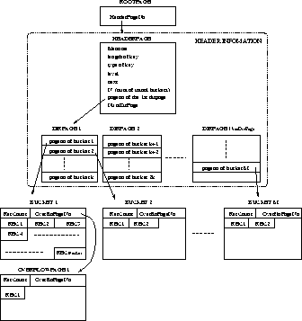

Data Structure


Next: Create/Open index
Up: Internal Design
Previous: Algorithm

Figure 1: Data Structures of Linear Hashing
Figure 1 shows an overview of the structure of linear hashing.
Since Buffer Manager only supports the handling of a page, the basic
storage unit in linear hashing is a page. However, there are several
different kinds of pages in linear hashing:
- BucketPage (see class Bucket)
BucketPage is used to store records. Each BucketPage contains
RecCnt as the count of how many records are in it, OverflowPageNo as the PageId of the overflow page (after it). If
no overflow page exists, the number is set to -1. The remaining space
is slotted to store the records. (We assume all records are of the
same length.) Records are stored one after another. As records are
deleted, the resulting hole will be compacted. See the description of
deletion for details.
- DirPage
DirPage is used to store the PageId's of the
primary pages of buckets. The internal structure of DirPage is very
simple - array of PageId's. The PageId's of all the DirPage's
are consecutive. See the description of directory handling for
details.
- HeaderPage (see class LHHeaderPage)
HeaderPage is used to store header information about the index. The
information includes:
- FileName: The index's name.
- length: The length of the key
- type: The AttrType of the key.
- level: The current level of linear hashing.
- next: The number of the bucket to be split next.
- N: The number of initial buckets.
- first_dir_pageno: The PageId of the first DirPage.
- NumDirPage: The number of DirPage's.
- RootPage (see class LHRootPage)
RootPage is the root of
the whole index. It only contains the PageId of the HeaderPage. When
the index is created, its PageId is given to db to associate it
with the name of the index. When the index is opened, db looks
up the index's name and returns the PageId of the RootPage. Given the
RootPage, we can access the HeaderPage, and therefore all the pages
in the index. One might have noticed that the HeaderPage can be
considered as the root of the index and RootPage is not needed at all
(because it's only used to find the HeaderPage). Indeed RootPage is
used only for the purpose of concurrency control. See the description
of concurrency control for details.
Next: Create/Open index
Up: Internal Design
Previous: Algorithm
Weiqing Huang
Sun May 14 16:22:27 CDT 1995